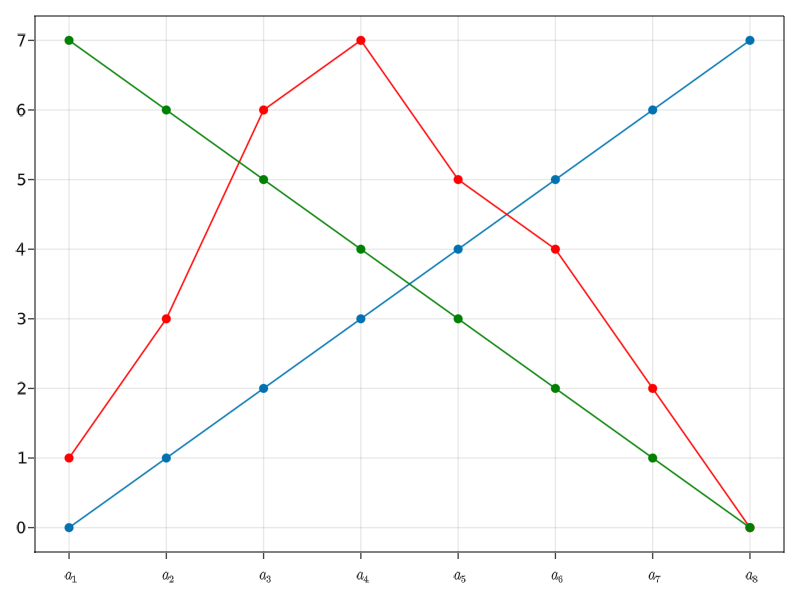
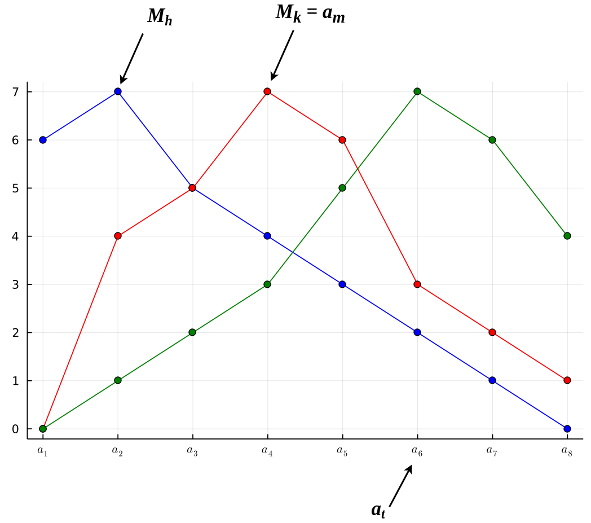
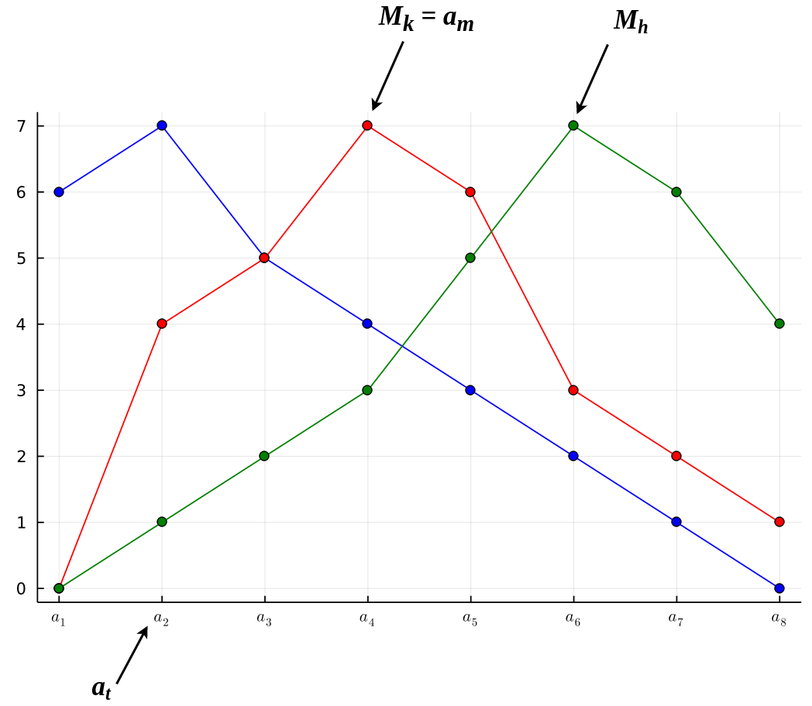

AR - Lesson 16
Indice
Single-Peaked Preferences and the Median Voter Theorem
Il teorema di Arrow, come anche il paradosso di Condorcet, pongono una prospettiva non rassicurante sui sistemi di voto.
Tuttavia, un approccio comune di fronte a un risultato di impossibilità è quello di considerare alcuni casi particolari, i quali sono anche ragionevoli se applicati in un contesto reale, che consentano in qualche modo di "aggirare" i risultati negativi visti fin ora.
Un punto di partenza è quello di osservare che c'è qualcosa di un po' insolito nel considerare ranking senza alcun vincolo.
Per fare un esempio, consideriamo le alternative X, Y, Z e i votanti 1, 2, 3 con i seguenti ranking:
- \(X >_1 Y >_1 Z\)
- \(Y >_2 Z >_2 X\)
- \(Z >_3 X >_3 Y\)
Supponiamo per esempio che le tre alternative indichino una quantità di investimento in denaro dove X rappresenta un investimento minimo, Y uno medio e Z uno alto.
Ovviamente la perdita in denaro derivata da un investimento è controbilanciata da un guadagno che segue la regola del "più spendi, più la qualità del ricavato è alta".
Per quanto riguarda la classifica del primo votante essa ha senso, in quanto egli si accontanta di spendere poco X, altrimenti una quantità media Y, e solo in estremis la quantità elevata Z.
Il secondo votante segue anche una certa logica, ovvero quella del "spendo un po' di più".
Infatti preferisce pagare una quantità media Y, eventualmente pagare molto Z, e solo alla fine pagare poco X.
Quello che non ha senso è la classifica del terzo votante.
Infatti inizia col dire che preferisce pagare tanto Z, dopodichè preferisce pagare poco X, e in fine preferisce pagare una quantità media Y.
In altre parole, i primi due elettori hanno preferenze che possono essere spiegate dalla "vicinanza" a una utilità fissata.
Ognuno di loro ha una quota ideale che vorrebbero invesitre, e valutano le alternative in base a quanto si avvicinano a questo ideale.
Le preferenze del terzo elettore non possono essere spiegate in questo modo, infatti non esiste una quantità "ideale".
Ovviamente questo non vuol dire che una persona non possa mantenere queste preferenze. Per esempio infatti il terzo giocatore potrebbe applicare il ragionamento del
"se non siamo disposti a investire abbastanza nell'istruzione per farlo bene, non dovremmo spendere nulla"
In generale però avere delle preferenze così differenti tra di loro è meno usuale.
Un altro esempio che rende meglio l'idea è una elezione di un politico.
Assumiamo che X sia un candidato con orientamento a sinistra, Z un candidato con orientamento a destra e Y un candidato più neutro ("centrale").
Per esempio per un elettore con preferenze a sinistra avrebbe senso presentare il seguente ranking \(\langle X, Y, Z \rangle\),
mentre per uno orientanto alla destra avrebbe senso il ranking \(\langle Z, Y, X \rangle\).
Anche il ranking \(\langle Y, Z, X \rangle\) ha un senso, ovvero quello del
"non ho un orientamento politico fortemente indirizzato a destra o sinistra perciò voto
Y, però se proprio devo scegliere un'alternativa scelgo la destra conZ"
Ciò che non avrebbe porprio senso sarebbe il rankin \(\langle Z, X, Y \rangle\), in quanto non ha molto senso che una persona di destra abbia come seconda scelta un candidato di sinistra (e viceversa).
Single-Peaked Preferences
Consideriamo quindi insiemi di alternative che corrispondono a quantità numeriche, o più in generale che abbiano un ordinamento lineare totale.
È ragionevole presumere che le preferenze individuali tendano ad assomigliare a quelle dei votanti dell'esempio precedente:
ognuno ha una particolare alternativa ideale nella gamma di alternative, e valutano le alternative in base alla loro vicinanza a questa alternativa ideale.
Perciò formalmente poniamoci in un contesto con alternative totalmente ordinate \[ A \equiv \lbrace a_1, ..., a_n | \forall i=1,...,n-1 \left[ a_i < a_{i+1} \right] \rbrace \] Dato un votante \(h \in \left[ k \right]\), diremo che il suo ranking \(r_h = \langle a_{h1}, a_{h2}, ..., a_{hn} \rangle\) è single peacked se comunque si scelgano tre alternative \(a_i < a_j < a_{\ell}\) non avremo che \(\rho_h(a_j) < \rho_h(a_i)\) e \(\rho_h(a_j) < \rho_h(a_{\ell})\). In termini formali \[ \forall a_i, a_j, a_{\ell} \in A : a_i < a_j < a_{\ell}\\ \lnot\left[ \rho_h(a_j) < \rho_h(a_i) \land \rho_h(a_j) < \rho_h(a_{\ell}) \right] \] Per fare chiarezza consideriamo ciascuna funzione \(\rho_h\) come una funzione su domini ordinati, allora \(\rho_h\) non ha minimi locali relativi.

Figura 1: Tre ranking single picked.
A questo punto supponiamo, senza perdita di generalità1, che per ogni votante \(h \in \left[ k \right]\), il "picco" (o alternativa ideale) del votante \(h\) non precedat il picco del votante \(h+1\).
Ovvero, sia \(P = \langle r_1, ..., r_k \rangle\) un profilo composto da soli ranking single picked.
Per ogni votante \(h \in \left[ k \right]\) indichiamo con \(M_h\) l'alternativa preferita del votante \(h\), ovvero
\[
M_h \in A \; : \; \rho_h(M_h) = n-1
\]
Allora i votanti sono ordinati in modo tale che
\[
M_1 \leq M_2 \leq ... \leq M_k
\]
Per esempio in figura 1 avremo che il votante verde è il primo votante, il rosso è il secondo e quello bul è l'ultimo.
Teorema del Votante Mediano
Nel caso in cui le alternative compongono un insieme totalmente ordinato e i ranking di tutti i votanti sono single peacked è possibile utilizzare il sistema di voto a maggioranza con la certezza di non incorrere nel paradosso di Condorcet.
Teorema del Votante Mediano
Sia \(A \equiv \lbrace a_1, a_2, ..., a_n \rbrace\) un insieme di alternative totalmente ordinate tali che \(a_1 \leq a_2 \leq ... \leq a_n\), e sia \(P = \langle r_1, ..., r_{2k-1} \rangle\) un profilo di \(2k-1\) ranking single peacked, ovvero tale che \[ M_1 \leq M_2 \leq ... \leq M_{2k-1} \] Allora per ogni alternativa \(y \in A \setminus \lbrace M_k \rangle\) avremo che \[ \vert \lbrace h : \rho_h(M_k) > \rho_h(y) \rbrace \vert > \vert \lbrace h : \rho_h(y) > \rho_h(M_k) \rbrace \vert \]
In termini più semplici il teorema ci dice che, sotto le sue ipotesi, esiste sempre un'alternativa preferita dalla maggior parte dei votanti,
ed essa corrisponde esattamente al picco del votante che si trova in posizione centrale rispetto all'ordinamento \(M_1 \leq M_2 \leq ... \leq M_{2k-1}\).
È facile osservare che tale alternativa \(M_k\) corrisponde alla prima in classifica.
A questo punto rimuovendo l'alternativa \(M_k\), i \(2k-1\) ranking continuano a rimanere single peacked, perciò si può pensare di riapplicare lo stesso ragionamento per trovare il secondo classificato, poi il terzo, e così via…
[VEDI ESEMPIO SLIDES 61-65]
Dimostrazione Teorema del Votante Mediano
Sia \(M_k = a_m\) l'alternativa preferita del votante mediano \(k\), ovvero tale che \(\rho_k(a_m) = n-1\). Consideriamo ora l'alternativa \(y = a_t \neq a_m\). Abbiamo due casi
- Caso \(t > m\)
Dato che le alternative sono totalmente ordinate avremo che se \(t > m\) allora \(a_t > a_m\). Inoltre, per come abbiamo ordinato i votanti, per ogni votante \(h \geq k\) avremo che \[ M_h \leq M_k = a_m < a_t \] Infine, dato che i ranking sono tutti single peacked, avremo che \[ \rho_h(M_h) \geq \rho_h(a_m) > \rho_h(a_t) \] Ovvero tutti i votanti \(h\) che precedono \(k\) preferiscono \(a_m\) ad \(a_t\).

Figura 2: Il rankign \(k\) è quello rosso, il ranging \(h\) è quello blu, \(m=4,t=6\).
Perciò i votanti che preferiscono invece \(a_t\) ad \(a_m\) hanno un indice \(h > k\) (non è detto che siano tutti quelli \(h > k\)). In conclusione abbiamo almeno \(k\) individui che preferiscono \(a_m\) ad \(a_t\) e al più \(k-1\) che viceversa preferiscono \(a_t\) ad \(a_m\). Ovvero la maggio parte preferisce \(a_m\) ad \(a_t\) se \(t > m\).
- Caso \(t < m\)
Dimostrazione del tutto simmetrica al caso precedente. Dato che le alternative sono totalmente ordinate avremo che se \(t < m\) allora \(a_t < a_m\). Inoltre, per come abbiamo ordinato i votanti, per ogni votante \(h \geq k\) avremo che \[ M_h \geq M_k = a_m > a_t \] Infine, dato che i ranking sono tutti single peacked, avremo che \[ \rho_h(M_h) \geq \rho_h(a_m) > \rho_h(a_t) \] Ovvero tutti i votanti \(h\) che succedono \(k\) preferiscono \(a_m\) ad \(a_t\).

Figura 3: Il rankign \(k\) è quello rosso, il ranging \(h\) è quello verde, \(m=4,t=2\).
Perciò i votanti che preferiscono invece \(a_t\) ad \(a_m\) hanno un indice \(h < k\) (non è detto che siano tutti quelli \(h < k\)). In conclusione abbiamo almeno \(k\) individui che preferiscono \(a_m\) ad \(a_t\) e al più \(k-1\) che viceversa preferiscono \(a_t\) ad \(a_m\). Ovvero la maggio parte preferisce \(a_m\) ad \(a_t\) se \(t < m\).
Applicando questo ragionamento per ogni \(y \in A \setminus \lbrace a_m \rbrace\) avremo che la maggior parte dei votatni preferisce \(a_m = M_k\) \(\square\).
Note a piè di pagina:
A meno di un riordinamento dei votanti.